Le week-end dernier, j'ai construit quelque chose qui, je le pense sincèrement, va changer la façon dont beaucoup de traders opèrent. Un agent IA qui lit le marché, prend des décisions et passe des ordres de manière complètement autonome. Pas de code, pas de configuration compliquée, juste du simple français. Et dans cette vidéo, je vais vous montrer exactement comment en construire un vous-même en moins de deux minutes, puis le confronter à tous les autres bots sur un classement en direct pour que vous puissiez voir exactement comment il se comporte. Entrons dans le vif du sujet. Maintenant, avant de vous montrer le tutoriel, je veux parler de quelque chose pendant une seconde, parce que je pense
Interface & Outils : Interface de graphique type TradingView / WEEX (contrat perpétuel BITCOIN/TETHERUS en timeframe journalier 1D).
Contenu textuel & Code : Graphique en chandeliers japonais montrant une tendance baissière avec un prix actuel autour de 70 724,9 USDT, des échelles de temps allant de 1s à 3w, et des onglets de paires en haut (SOLUSDT.P, BTCUSDT.P).
Action / Démonstration : Visualisation et analyse du graphique des prix du Bitcoin sur une période de plusieurs mois (de mai à avril).
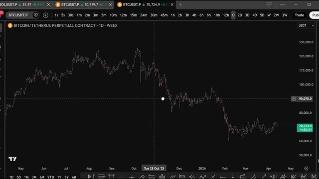
🔍 AgrandirC'est en réalité important. Nous sommes à un stade très précoce de quelque chose de massif. À l'heure actuelle, la plupart des traders font encore tout manuellement, en surveillant les graphiques, en configurant des alertes, en passant des ordres, et en répétant cela chaque jour. Et écoutez, ça fonctionne. Mais voici le problème, les traders qui découvrent comment utiliser des agents IA dès maintenant, alors que les modèles en sont encore à leurs débuts, vont avoir un sérieux avantage sur tous les autres. Parce que voici ce que la plupart des gens ne réalisent pas. Les modèles disponibles aujourd'hui sont déjà suffisamment bons pour bâtir des stratégies rentables. Et quand la prochaine génération de modèles
Interface & Outils : TradingView, Weex, navigateur web, ChatGPT
Contenu textuel & Code : Graphique de prix BTC/USDT en timeframe journalier avec curseur croisé, articles et résumés textuels sur l'IA et le trading de Bitcoin. [DESC_IMAGE_1 bis] Analyse visuelle du graphique des prix BTC montrant les mouvements du marché.
Action / Démonstration : Visualisation et présentation du graphique historique des prix du Bitcoin pour illustrer le contexte du marché.
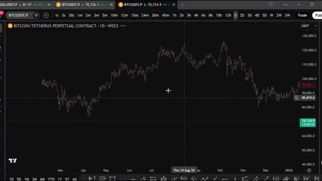
🔍 Agrandirdes, nous parlons de choses comme mythos. L'écart entre les traders manuels et les traders assistés par IA va être énorme. La question n'est donc pas de savoir si le trading agentique va devenir une norme. La question est de savoir si vous allez être en avance ou en retard. Et c'est exactement pour cela que j'ai créé agent, P&L. C'est une plateforme où n'importe qui, et je dis bien n'importe qui, peut créer son propre agent de trading autonome en utilisant simplement un simple prompt en anglais. Vous décrivez votre stratégie. Choisissez un modèle, appuyez sur démarrer, et votre bot commence à trader tout seul. Le P&L s'affiche en direct sur un classement public à côté
Interface & Outils : AgentPNL (tableau de bord de bots de trading IA)
Contenu textuel & Code : Liste des bots (Profitable Strategy 1, Capo Bot, Profitable SOL, Memecoins, Bollinger Band Mean Reversion, MACD + VWAP Momentum, Keltner Channel), paires de trading (BTCUSDT, ETHUSDT, SOLUSDT), modèles d'IA utilisés (Claude Haiku/Opus), PNL, rendement, nombre de trades, taux de réussite (WIN %) et statut (running/stopped).
Action / Démonstration : Présentation et analyse des performances des différents bots de trading automatisés pilotés par des agents IA sur une interface web.
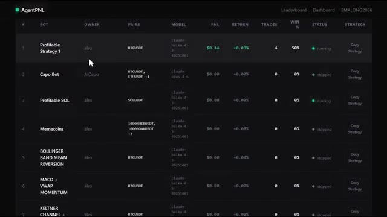
🔍 Agrandirà tous les autres bots de la plateforme. Pas de code, pas d'interface API, pas de configuration compliquée, juste votre stratégie, avec vos propres mots, en direct. Laissez-moi vous montrer exactement comment ça fonctionne. Alors d'abord, allez sur agentpnl.io. Je mettrai le lien dans la description ci-dessous. Quand vous arrivez sur la page, la première chose que vous allez voir, c'est le classement. Et c'est en fait l'une de mes parties préférées de la plateforme parce que vous pouvez voir chaque bot que les autres utilisateurs ont déjà créé et déployé. Vous pouvez voir le rang, le nom du bot, qui en est le propriétaire, quelles paires de trading ils
Interface & Outils : Site web AgentPNL (agentpnl.io)
Contenu textuel & Code : Texte de présentation (« AgentPNL. Build AI trading bots. Put them on the leaderboard. »), boutons « Start a bot » et « Login », ainsi qu'un tableau de classement (Leaderboard) affichant des bots, propriétaires, paires (BTCUSDT), modèles, PNL, rendements et statuts.
Action / Démonstration : Navigation et présentation de l'interface principale du site web par le présentateur.
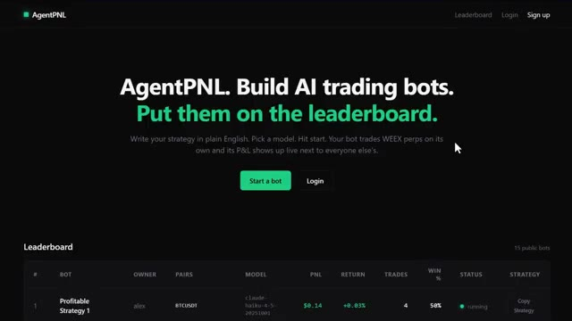
🔍 Agrandirqui fonctionnent, quel modèle d'intelligence artificielle ils utilisent pour créer le bot, le compte de résultat, le rendement, combien de transactions il a effectuées, le taux de réussite et l'état actuel. Ce sont des données en direct, de vrais bots, de vrais résultats. Maintenant, voici quelque chose de vraiment utile, et je veux m'assurer que vous ne sautez pas cette partie. Vous pouvez réellement copier n'importe quelle stratégie du classement. Il vous suffit de cliquer sur copier la stratégie, d'ouvrir un bloc-notes ou votre application de notes, et de la coller. Vous pouvez lire exactement ce que fait ce bot, quelle est la logique, comment il prend des décisions, sur quelles conditions il trade. C'est un excellent moyen d'apprendre. Vous pouvez étudier ce que le
Interface & Outils : AgentPNL (plateforme web de suivi de bots de trading) et Notepad (éditeur de texte Windows).
Contenu textuel & Code : Tableaux de bots de trading (Profitable Strategy 1, Capo Bot, Profitable SOL, Memecoins, etc.), modèles d'IA utilisés (Claude Haiku, Claude Opus), PNL (+0,14 $), rendement (+0,03 %), nombre de transactions (4), taux de réussite (50 %), statut (running/stopped), et règles de stratégie de trading écrites en texte.
Action / Démonstration : Présentation des résultats en direct des bots de trading et affichage de la configuration textuelle d'une stratégie de trading.
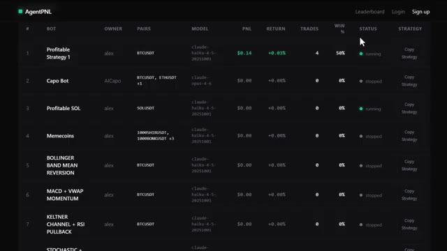
🔍 Agrandir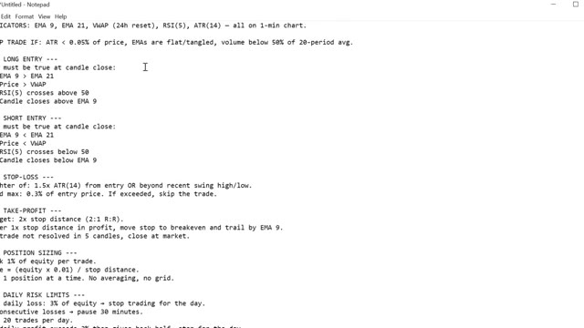
🔍 Agrandirles bots les plus performants font, comprendre la structure, et ensuite construisez votre propre version avec votre propre touche. Une chose que j'aime personnellement faire est de prendre cette stratégie, de la transformer en Pinescript sur TradingView, et de l'intégrer pour qu'elle s'exécute automatiquement. Mais c'est une toute autre vidéo. Si vous voulez voir cette configuration, je la couvre bien au sein de la communauté.
Interface & Outils : AgentPNL (plateforme de bots de trading) et TradingView (Pine Editor et graphique de prix).
Contenu textuel & Code : Tableau des bots performants (Profitable Strategy 1, Capo Bot) sur AgentPNL, et code source Pine Script (paramètres RSI, ATR, EMA, gestion des risques) associé à un graphique en chandeliers sur TradingView.
Action / Démonstration : Présentation du classement des bots puis transition vers l'écriture de la stratégie en Pine Script sur TradingView.
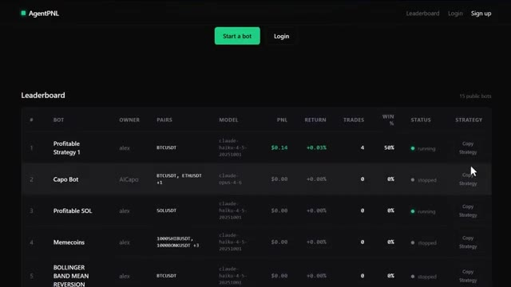
🔍 Agrandir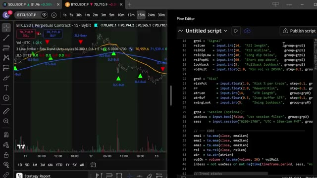
🔍 AgrandirJe mentionnerai cela à la fin. Aussi, et c'est quelque chose que je veux lancer ici, le bot numéro un du classement qui génère systématiquement le rendement et le P&L les plus élevés va recevoir une incitation de ma part personnellement. Il y a donc une vraie raison de construire quelque chose de bien et de le rendre public. Très bien, alors construisons réellement un bot.
Interface & Outils : Interface web AgentPNL (Leaderboard)
Contenu textuel & Code : Tableau listant les bots de trading avec leurs métriques : rang (#), nom du bot (Profitable Strategy 1, Capo Bot, Profitable SOL, etc.), propriétaire (alex, AICapo), paires de trading (BTCUSDT, ETHUSDT, SOLUSDT), modèle d'IA utilisé, PNL, rendement (Return), nombre de trades, taux de réussite (WIN %), statut (running/stopped) et option de stratégie (Copy Strategy). Le bot numéro 1 affiche un PNL de +$0.14 et un rendement de +0.03%.
Action / Démonstration : Présentation du tableau de classement des bots de trading et de leurs performances en direct.
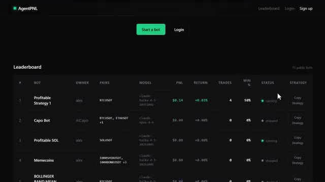
🔍 AgrandirCliquez sur Démarrer un bot. Vous pouvez vous inscrire en utilisant votre adresse e-mail et créer un mot de passe fort. Cela prend environ 30 secondes. Une fois que vous êtes connecté, la première chose à faire avant toute autre chose est d'aller sur votre profil. C'est ici que vous configurez tout avant que votre bot puisse fonctionner. D'abord, vous pouvez créer un nom d'utilisateur. C'est ce qui s'affichera sur le classement à côté de votre bot.
Interface & Outils : Présentation ou face-caméra explicatif du trader sans interface logicielle partagée.
Contenu textuel & Code : Explications orales des stratégies et mise en contexte méthodologique du marché.
Action / Démonstration : Explications face caméra et analyse conceptuelle des marchés.
Maintenant, la partie importante. Au bas de la page du profil, vous devez connecter votre API Exchange. Vous devrez y coller trois choses. Votre clé API, votre clé secrète API, votre phrase de passe. Ces trois champs sont obligatoires. Votre bot ne démarrera pas sans eux. Et je tiens à être clair à ce sujet.
Interface & Outils : Interface web de la plateforme AgentPNL.
Contenu textuel & Code : Champs de configuration pour l'échange WEEX incluant API KEY, API SECRET et PASSPHRASE, ainsi que les instructions indiquant que ces trois champs sont obligatoires.
Action / Démonstration : Présentation des champs requis pour connecter l'API de l'exchange WEEX à la plateforme de trading.
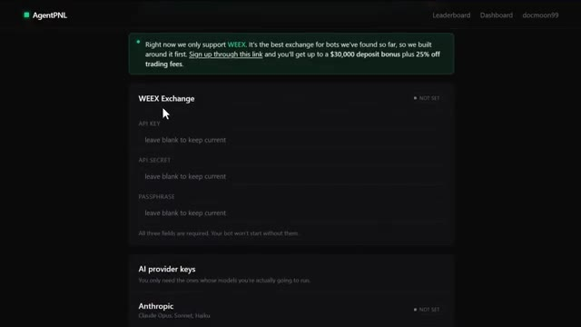
🔍 AgrandirChaque clé API que vous collez ici est chiffrée avant d'atteindre la base de données. Donc, vos identifiants ne sont pas stockés en texte clair. C'est un détail important. Ensuite, vous devez ajouter vos clés de fournisseur d'IA. Vous n'avez besoin que de celles pour les modèles que vous allez réellement utiliser. Vous avez quatre options. Anthropic, qui est Claude.
Interface & Outils : Application web AgentPNL (Interface de configuration / Settings)
Contenu textuel & Code : Champs de configuration utilisateur, note de sécurité concernant le chiffrement des clés API, et section de liaison avec l'exchange WEEX (API Key et API Secret).
Action / Démonstration : Configuration des paramètres du compte et des clés API pour l'intégration de l'exchange.
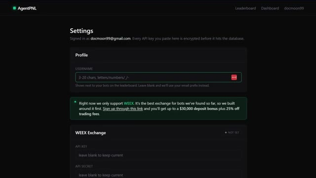
🔍 AgrandirOpenAI, which is ChatGPT. XAI, which is Grok. Google, which is Gemini. Pick whichever model you want to run your bot on. Paste in the key and you are good. Once that is all set up, click on dashboard. In the upper right corner, you will see create new bot. Or if this is your first time, there will be a button in the middle of the screen as well.
Interface & Outils : Application web AgentPNL.
Contenu textuel & Code : Champs de saisie des clés API pour OpenAI (GPT-5, GPT-4.1, GPT-4o, o3), xAI (Grok 4, Grok 3) et Google (Gemini 2.5 Pro, 2.5 Flash, 2.0 Flash) avec un bouton "Save changes".
Action / Démonstration : Configuration des clés d'accès aux modèles d'intelligence artificielle pour alimenter les bots de trading.
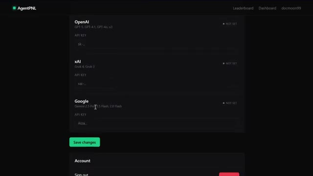
🔍 AgrandirCliquez là-dessus. Maintenant, c'est là que ça devient intéressant. Vous donnez un nom à votre bot et ensuite vous écrivez votre stratégie en anglais simple. C'est tout. Pas de code. Décrivez simplement ce que vous voulez que votre bot fasse. Comment il doit entrer sur les marchés, quand il doit sortir, quelles conditions il recherche. La plateforme envoie ceci à l'IA à chaque cycle avec les dernières données du marché et vos limites de risque, et le modèle prend la décision. Soyez donc précis. Plus votre invite est bonne, meilleur est votre bot. Ensuite, choisissez votre paire de trading.
Interface & Outils : Interface web de la plateforme AgentPNL ("New bot" / Setup).
Contenu textuel & Code : Nom du bot configuré à "Momentum Bot". Description textuelle en anglais de la stratégie de trading basée sur le momentum, incluant l'utilisation de bougies 5 minutes, de la SMA 20, des variations sur 24h, et des règles de gestion des risques (stop-loss à 0.4%, limitation du nombre d'entrées).
Action / Démonstration : Saisie et affichage de la configuration et du prompt textuel définissant les règles d'entrée et de sortie du bot de trading.
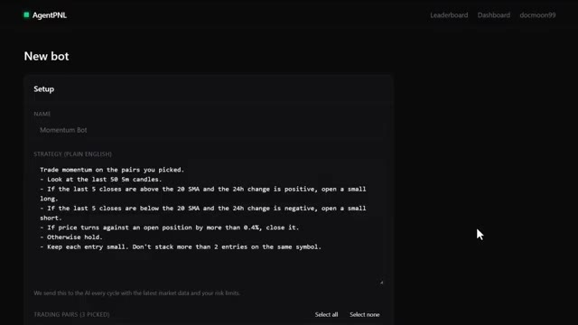
🔍 AgrandirVous pouvez en sélectionner autant que vous voulez. Si vous ne trouvez pas une paire spécifique dans la liste, utilisez simplement la barre de recherche. Définissez ensuite votre intervalle. C'est la fréquence à laquelle votre bot vérifie le marché et prend une décision. Vous pouvez aller de 1 minute jusqu'à 60 minutes selon votre stratégie. Après cela, vous avez quelques paramètres facultatifs. Le premier est la position maximale en USDT. Cela plafonne l'importance de votre exposition totale. Le deuxième est la taille maximale des transactions. Si vous laissez ce champ vide, le bot calculera sa taille automatiquement, environ à 5 % de votre allocation. Et la dernière option est l'effet de levier. Si
Interface & Outils : AgentPNL (plateforme de trading par agent IA)
Contenu textuel & Code : Champs de configuration : Intervalle (réglé sur 5 minutes), Max Position (500 USDT), sélection du modèle (Claude Opus 4.6), et option pour rendre le bot public sur le classement.
Action / Démonstration : Configuration des paramètres temporels et des limites de risque pour le lancement d'un nouveau bot de trading.
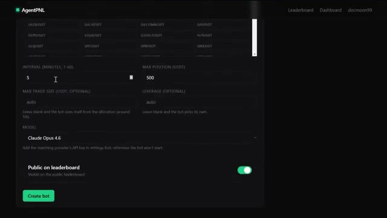
🔍 Agrandirtu le laisses vide, le bot choisira de lui-même en fonction de la stratégie. Maintenant, choisis ton modèle. Tu as une solide gamme parmi laquelle choisir. Anthropic Claude, qui propose Opus, Sonnet ou Haiku. OpenAI, qui propose GPT-5, GPT-4.1 ou O3. XAI propose Grok 4, 3 ou 3 mini. Les modèles Google Gemini de 2.0 Flash à 2.5 Pro.
Interface & Outils : Interface de configuration du bot de trading ou de l'application avec un menu déroulant des modèles d'IA.
Contenu textuel & Code : Liste des modèles disponibles : Claude (Haiku 4.5, Opus 4.5, Sonnet 4.5, 3.7 Sonnet, etc.), OpenAI (GPT-5, GPT-4.1, o3, etc.), et xAI Grok (Grok 4, Grok 3). Option "Public on leaderboard" visible en bas.
Action / Démonstration : Sélection d'un modèle d'intelligence artificielle dans la liste déroulante pour configurer le système.
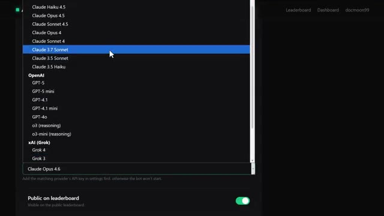
🔍 AgrandirChaque modèle a des forces différentes. Personnellement, je trouve que les modèles les plus puissants ont tendance à mieux raisonner sur les conditions du marché, mais vous pouvez expérimenter et voir ce qui fonctionne le mieux pour votre stratégie. Enfin, si vous voulez que votre bot apparaisse sur le classement public et concoure contre tout le reste, activez « public sur le classement ». Je recommande vivement de le faire. C'est là que se trouve la compétition. C'est là que se trouve la motivation. Et honnêtement, voir votre bot classé par rapport aux autres, c'est ce qui rend cela amusant. Une fois que vous êtes satisfait de tout, cliquez sur créer le bot et votre agent
Interface & Outils : Application web AgentPNL (agentpnl.io)
Contenu textuel & Code : Paramètres de configuration du bot : Interval (5 minutes), Max Position (500 USDT), sélection du modèle d'IA (Claude Opus 4.6), option de visibilité publique sur le leaderboard et bouton de création de bot.
Action / Démonstration : Sélection du modèle d'intelligence artificielle pour le bot de trading.
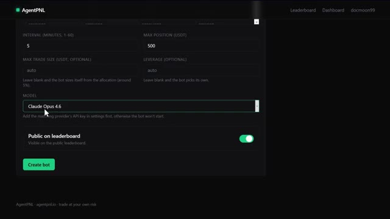
🔍 Agrandirest maintenant en ligne. Maintenant, une chose que j'aime personnellement faire, c'est de prendre cette stratégie copiée, de la coller dans Claude et de lui demander de la transformer en un script Pine pour TradingView. Si vous voulez aller encore plus loin avec ça, je couvre l'intégration complète de TradingView et de Claude au sein de ma communauté. J'en reparlerai dans un instant. Maintenant, et je veux être franc avec vous ici, pour les deux prochaines années, deux types de traders existeront. Celui qui utilise l'IA et se simplifie la vie et celui qui ne le fait pas et fait encore tout manuellement. Et sur le même marché, cela façonnera un résultat très différent. Je lance
Interface & Outils : TradingView, Éditeur Pine Script, Interface web X (Twitter).
Contenu textuel & Code : Règles de trading algorithmique (EMA, RSI, VWAP), code source Pine Script, métriques de performance de backtest (Total P&L : +241,532.85 USDT, Drawdown : 56.61%). [DESC_IMAGE_3] (Non retenue selon les critères techniques de démonstration réelle de trading/code).
Action / Démonstration : Présentation des règles d'une stratégie de trading et affichage de son implémentation sous forme de script Pine sur TradingView.
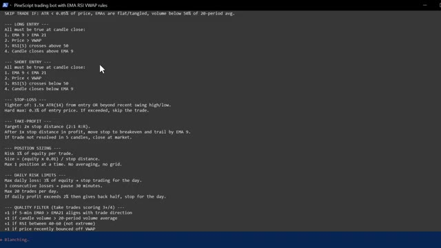
🔍 Agrandir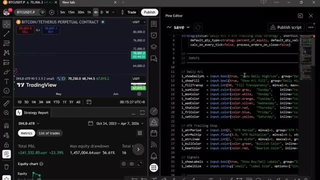
🔍 Agrandirla communauté AI Trade Edge. Chaque invite, bot, agent, modèle et guide étape par étape que j'utilise personnellement, le tout au même endroit. Et tout ce que je construirai à l'avenir sera ajouté directement dans le groupe. Chaque nouvelle intégration, chaque nouvelle stratégie, chaque nouvelle invite, chaque mise à jour, de l'intégration de TradingView au trading sur Telegram et au suivi des baleines sur Hyperliquid.
Interface & Outils : Navigateur web, site de la communauté Alex Carter Trading.
Contenu textuel & Code : Texte listant 78 outils permettant à Claude de contrôler TradingView (lecture de graphiques, données OHLCV en direct, valeurs d'indicateurs comme RSI, MACD, EMA, Bollinger, et contrôle des symboles, timeframes, etc.).
Action / Démonstration : Navigation sur la plateforme de la communauté montrant les guides et fonctionnalités du projet.
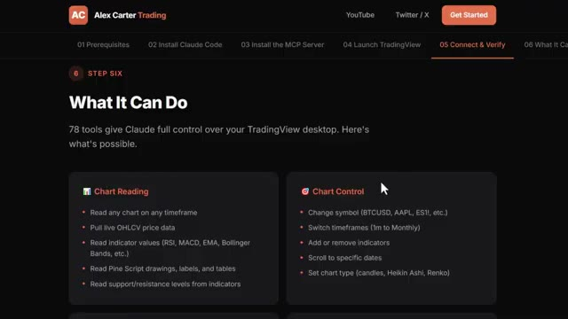
🔍 AgrandirDès votre inscription, vous obtenez tout. Le prix est de 79,99 $ par mois. Et honnêtement, quand on y pense, ce que c'est vraiment. La configuration de trading IA la plus avancée disponible pour les traders particuliers en ce moment, constamment mise à jour avec tout inclus. Ce n'est pas beaucoup d'argent. Un seul bon trade le couvre. Mais les 100 premiers membres bloquent ce tarif de façon permanente. Après cela, le prix augmente. Donc, plus vous entrez tôt, meilleure est l'offre. Le lien est dans la description.
Interface & Outils : Plateforme Whop, interface web de vente et de configuration de bots de trading.
Contenu textuel & Code : Tarifs de l'abonnement (79,99 $ / mois), fonctionnalités de trading Futures et Spot, FAQ incluant les intégrations WEEX pour actions et crypto.
Action / Démonstration : Navigation sur la page de présentation et de tarification du service d'outils de trading IA.
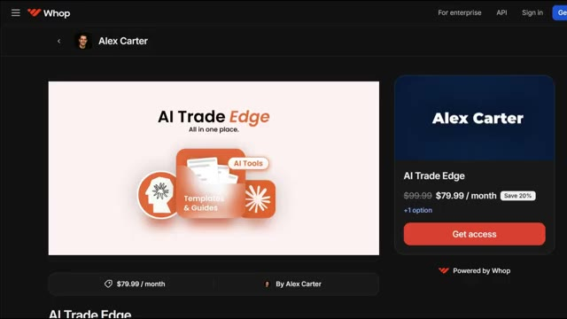
🔍 Agrandir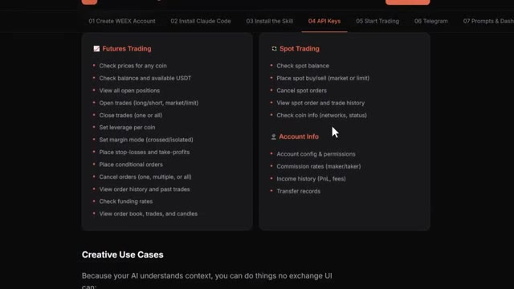
🔍 Agrandir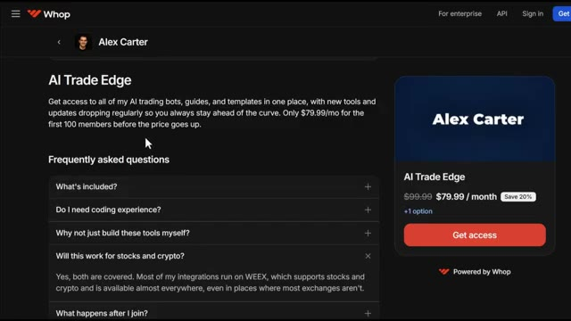
🔍 AgrandirEntrez dès maintenant avant que le prix n'augmente. Vous ne pouvez véritablement pas vous permettre de rater ça. Et c'est tout. Votre propre agent de trading autonome construit en moins de deux minutes, fonctionnant en direct et concourant sur un classement public. Si vous voulez voir la démonstration complète sur la façon de configurer l'exécution automatisée des transactions en utilisant Telegram et TradingView, regardez la vidéo qui apparaît à l'écran en ce moment même. Si vous avez trouvé cela utile, laissez un pouce bleu. Cela aide vraiment la chaîne. Abonnez-vous si ce n'est pas déjà fait, et je vous vois dans la prochaine.
Interface & Outils : AgentPNL (plateforme de bots de trading IA), TradingView, éditeur de code Pine Script.
Contenu textuel & Code : Classement public des bots avec métriques (PNL, rendement, trades, taux de réussite), graphique de prix Bitcoin et code source d'indicateur technique en Pine Script.
Action / Démonstration : Présentation de la plateforme de création de bots IA et affichage d'un graphique technique avec son script de stratégie associé.
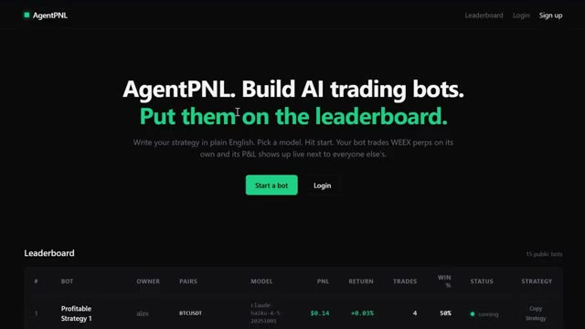
🔍 Agrandir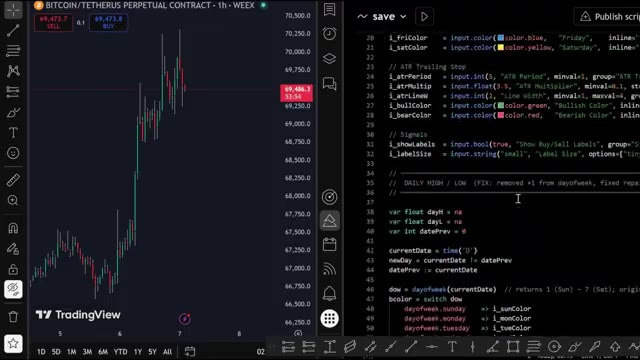
🔍 Agrandir